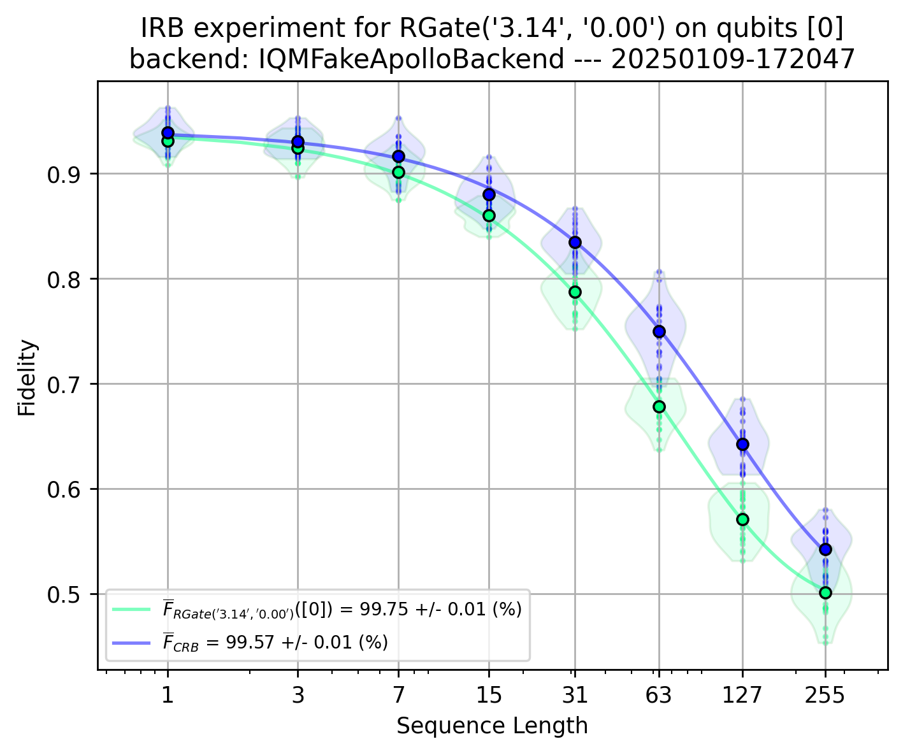
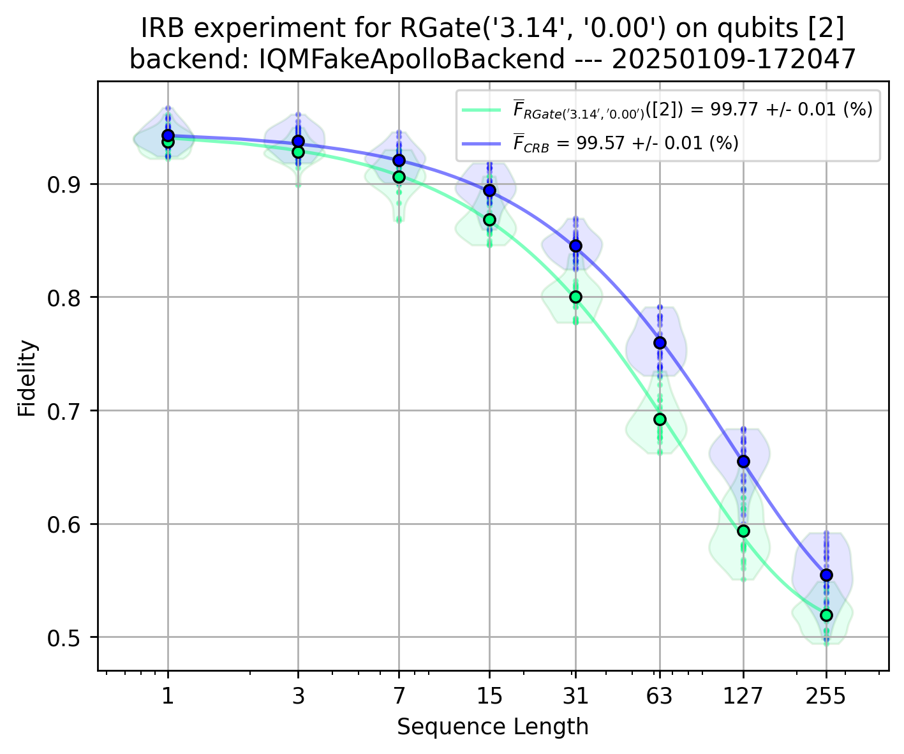
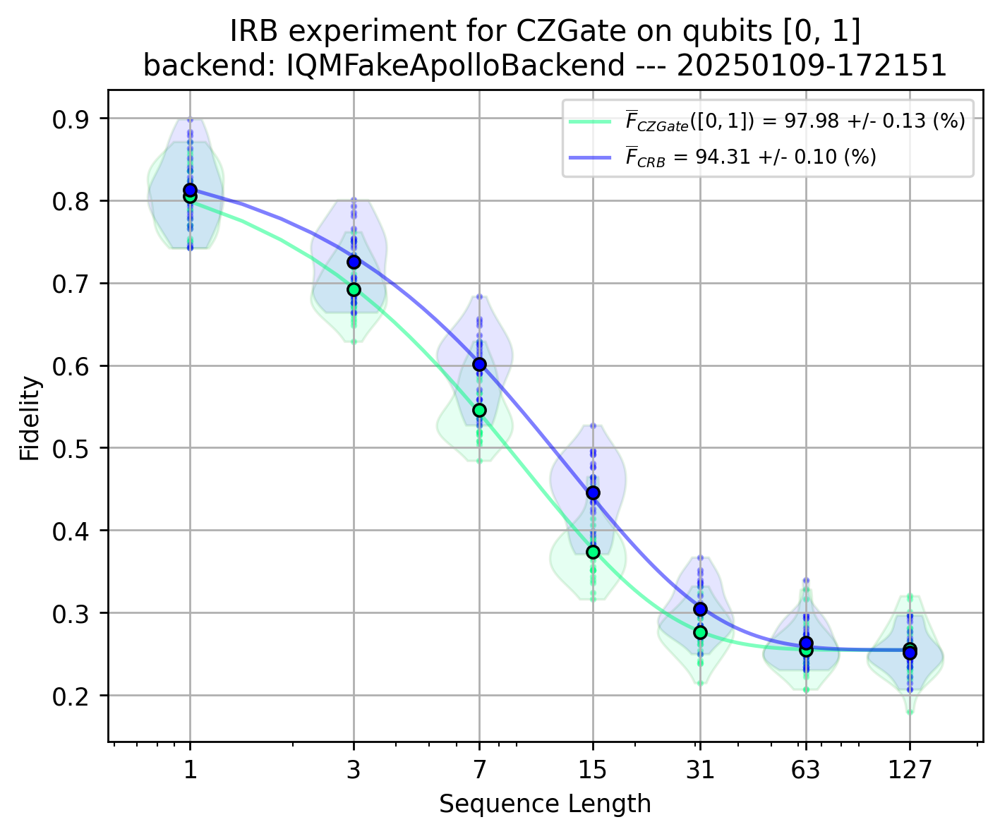
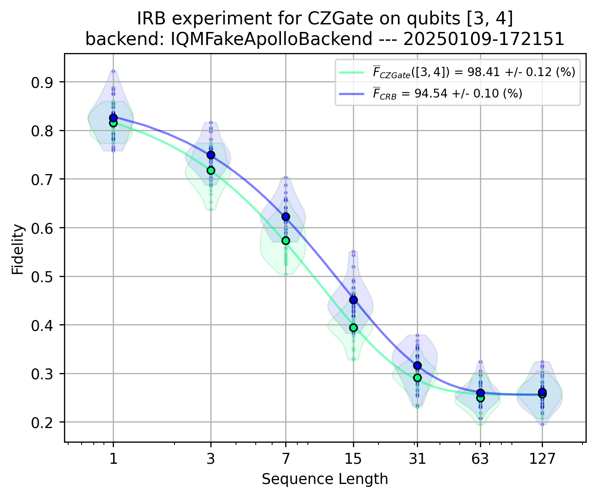
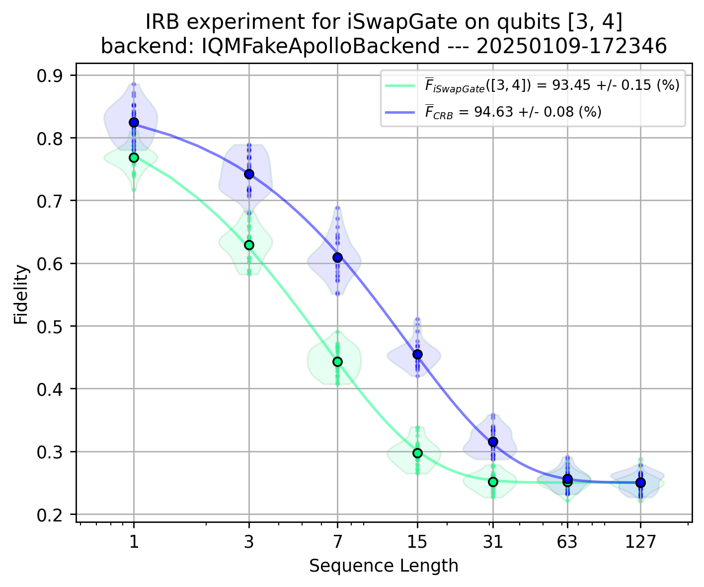
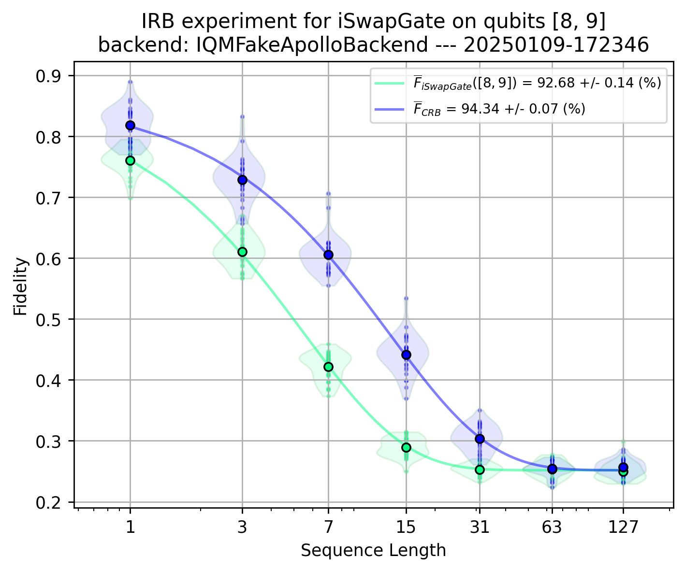

Interleaved Randomized Benchmarking (IRB)#
%load_ext autoreload
%autoreload 2
Choose (or define) a backend#
#backend = "fakeadonis"
backend = "fakeapollo"
#backend = "garnet"
#backend = "deneb"
Set IQM Token if using Resonance.
# import os
# os.environ["IQM_TOKEN"] = ""
Interleaved Randomized Benchmarking Configuration#
1Q gate IRB#
from iqm.benchmarks.randomized_benchmarking.interleaved_rb.interleaved_rb import *
import numpy as np
EXAMPLE_IRB_1Q = InterleavedRBConfiguration(
qubits_array=[[0],[2]],#,[4],[6]],[8],[10],[12],[14],[16],[17],[19]],
sequence_lengths=[2**(m+1)-1 for m in range(8)],
num_circuit_samples=25,
shots=2**9,
calset_id=None,
parallel_execution=True,
interleaved_gate = "RGate",
interleaved_gate_params = [np.pi, 0],
simultaneous_fit = ["amplitude", "offset"],
)
Run the experiment - 1Q gate IRB#
benchmark_irb_1Q = InterleavedRandomizedBenchmarking(backend, EXAMPLE_IRB_1Q)
run_irb_1Q = benchmark_irb_1Q.run()
2025-01-09 17:20:51,553 - iqm.benchmarks.logging_config - INFO - Clifford dictionaries imported successfully !
2025-01-09 17:20:52,324 - iqm.benchmarks.logging_config - INFO - Now executing parallel Interleaved RB on qubits [[0], [2]]. Will generate and submit all 25 Interleaved and Clifford RB circuits for each depth [1, 3, 7, 15, 31, 63, 127, 255].
2025-01-09 17:20:52,324 - iqm.benchmarks.logging_config - INFO - Generating Clifford RB circuits of sequence length 1
2025-01-09 17:20:52,387 - iqm.benchmarks.logging_config - INFO - Generating Interleaved RB circuits of sequence length 1
2025-01-09 17:20:52,432 - iqm.benchmarks.logging_config - INFO - Submitting batch with 25 circuits corresponding to qubits [0, 2]
2025-01-09 17:20:52,440 - iqm.benchmarks.logging_config - INFO - Submitting batch with 25 circuits corresponding to qubits [0, 2]
2025-01-09 17:20:52,652 - iqm.benchmarks.logging_config - INFO - Both jobs for sequence length 1 submitted successfully!
2025-01-09 17:20:52,671 - iqm.benchmarks.logging_config - INFO - Generating Clifford RB circuits of sequence length 3
2025-01-09 17:20:52,964 - iqm.benchmarks.logging_config - INFO - Generating Interleaved RB circuits of sequence length 3
2025-01-09 17:20:53,064 - iqm.benchmarks.logging_config - INFO - Submitting batch with 25 circuits corresponding to qubits [0, 2]
2025-01-09 17:20:53,065 - iqm.benchmarks.logging_config - INFO - Submitting batch with 25 circuits corresponding to qubits [0, 2]
2025-01-09 17:20:53,090 - iqm.benchmarks.logging_config - INFO - Both jobs for sequence length 3 submitted successfully!
2025-01-09 17:20:53,294 - iqm.benchmarks.logging_config - INFO - Generating Clifford RB circuits of sequence length 7
2025-01-09 17:20:53,688 - iqm.benchmarks.logging_config - INFO - Generating Interleaved RB circuits of sequence length 7
2025-01-09 17:20:53,881 - iqm.benchmarks.logging_config - INFO - Submitting batch with 25 circuits corresponding to qubits [0, 2]
2025-01-09 17:20:53,881 - iqm.benchmarks.logging_config - INFO - Submitting batch with 25 circuits corresponding to qubits [0, 2]
2025-01-09 17:20:53,939 - iqm.benchmarks.logging_config - INFO - Both jobs for sequence length 7 submitted successfully!
2025-01-09 17:20:54,168 - iqm.benchmarks.logging_config - INFO - Generating Clifford RB circuits of sequence length 15
2025-01-09 17:20:54,664 - iqm.benchmarks.logging_config - INFO - Generating Interleaved RB circuits of sequence length 15
2025-01-09 17:20:57,002 - iqm.benchmarks.logging_config - INFO - Submitting batch with 25 circuits corresponding to qubits [0, 2]
2025-01-09 17:20:57,003 - iqm.benchmarks.logging_config - INFO - Submitting batch with 25 circuits corresponding to qubits [0, 2]
2025-01-09 17:20:57,022 - iqm.benchmarks.logging_config - INFO - Both jobs for sequence length 15 submitted successfully!
2025-01-09 17:20:57,107 - iqm.benchmarks.logging_config - INFO - Generating Clifford RB circuits of sequence length 31
2025-01-09 17:20:58,188 - iqm.benchmarks.logging_config - INFO - Generating Interleaved RB circuits of sequence length 31
2025-01-09 17:20:58,890 - iqm.benchmarks.logging_config - INFO - Submitting batch with 25 circuits corresponding to qubits [0, 2]
2025-01-09 17:20:58,890 - iqm.benchmarks.logging_config - INFO - Submitting batch with 25 circuits corresponding to qubits [0, 2]
2025-01-09 17:20:58,916 - iqm.benchmarks.logging_config - INFO - Both jobs for sequence length 31 submitted successfully!
2025-01-09 17:20:58,991 - iqm.benchmarks.logging_config - INFO - Generating Clifford RB circuits of sequence length 63
2025-01-09 17:21:03,396 - iqm.benchmarks.logging_config - INFO - Generating Interleaved RB circuits of sequence length 63
2025-01-09 17:21:07,981 - iqm.benchmarks.logging_config - INFO - Submitting batch with 25 circuits corresponding to qubits [0, 2]
2025-01-09 17:21:07,982 - iqm.benchmarks.logging_config - INFO - Submitting batch with 25 circuits corresponding to qubits [0, 2]
2025-01-09 17:21:07,989 - iqm.benchmarks.logging_config - INFO - Both jobs for sequence length 63 submitted successfully!
2025-01-09 17:21:08,058 - iqm.benchmarks.logging_config - INFO - Generating Clifford RB circuits of sequence length 127
2025-01-09 17:21:14,538 - iqm.benchmarks.logging_config - INFO - Generating Interleaved RB circuits of sequence length 127
2025-01-09 17:21:21,120 - iqm.benchmarks.logging_config - INFO - Submitting batch with 25 circuits corresponding to qubits [0, 2]
2025-01-09 17:21:21,121 - iqm.benchmarks.logging_config - INFO - Submitting batch with 25 circuits corresponding to qubits [0, 2]
2025-01-09 17:21:21,146 - iqm.benchmarks.logging_config - INFO - Both jobs for sequence length 127 submitted successfully!
2025-01-09 17:21:21,216 - iqm.benchmarks.logging_config - INFO - Generating Clifford RB circuits of sequence length 255
2025-01-09 17:21:31,522 - iqm.benchmarks.logging_config - INFO - Generating Interleaved RB circuits of sequence length 255
2025-01-09 17:21:42,033 - iqm.benchmarks.logging_config - INFO - Submitting batch with 25 circuits corresponding to qubits [0, 2]
2025-01-09 17:21:42,034 - iqm.benchmarks.logging_config - INFO - Submitting batch with 25 circuits corresponding to qubits [0, 2]
2025-01-09 17:21:42,040 - iqm.benchmarks.logging_config - INFO - Both jobs for sequence length 255 submitted successfully!
2025-01-09 17:21:42,103 - iqm.benchmarks.logging_config - INFO - Retrieving all counts for clifford_qubits_[[0], [2]]_depth_1
2025-01-09 17:21:42,173 - iqm.benchmarks.logging_config - INFO - Adding counts of qubits [[0], [2]] and depth 1 run to the dataset
2025-01-09 17:21:48,744 - iqm.benchmarks.logging_config - INFO - Retrieving all counts for clifford_qubits_[[0], [2]]_depth_3
2025-01-09 17:21:48,745 - iqm.benchmarks.logging_config - INFO - Adding counts of qubits [[0], [2]] and depth 3 run to the dataset
2025-01-09 17:21:48,780 - iqm.benchmarks.logging_config - INFO - Retrieving all counts for clifford_qubits_[[0], [2]]_depth_7
2025-01-09 17:21:48,781 - iqm.benchmarks.logging_config - INFO - Adding counts of qubits [[0], [2]] and depth 7 run to the dataset
2025-01-09 17:21:48,818 - iqm.benchmarks.logging_config - INFO - Retrieving all counts for clifford_qubits_[[0], [2]]_depth_15
2025-01-09 17:21:48,819 - iqm.benchmarks.logging_config - INFO - Adding counts of qubits [[0], [2]] and depth 15 run to the dataset
2025-01-09 17:21:48,860 - iqm.benchmarks.logging_config - INFO - Retrieving all counts for clifford_qubits_[[0], [2]]_depth_31
2025-01-09 17:21:48,861 - iqm.benchmarks.logging_config - INFO - Adding counts of qubits [[0], [2]] and depth 31 run to the dataset
2025-01-09 17:21:48,906 - iqm.benchmarks.logging_config - INFO - Retrieving all counts for clifford_qubits_[[0], [2]]_depth_63
2025-01-09 17:21:48,906 - iqm.benchmarks.logging_config - INFO - Adding counts of qubits [[0], [2]] and depth 63 run to the dataset
2025-01-09 17:21:48,954 - iqm.benchmarks.logging_config - INFO - Retrieving all counts for clifford_qubits_[[0], [2]]_depth_127
2025-01-09 17:21:48,954 - iqm.benchmarks.logging_config - INFO - Adding counts of qubits [[0], [2]] and depth 127 run to the dataset
2025-01-09 17:21:49,007 - iqm.benchmarks.logging_config - INFO - Retrieving all counts for clifford_qubits_[[0], [2]]_depth_255
2025-01-09 17:21:49,008 - iqm.benchmarks.logging_config - INFO - Adding counts of qubits [[0], [2]] and depth 255 run to the dataset
2025-01-09 17:21:49,067 - iqm.benchmarks.logging_config - INFO - Retrieving all counts for interleaved_qubits_[[0], [2]]_depth_1
2025-01-09 17:21:49,067 - iqm.benchmarks.logging_config - INFO - Adding counts of qubits [[0], [2]] and depth 1 run to the dataset
2025-01-09 17:21:49,133 - iqm.benchmarks.logging_config - INFO - Retrieving all counts for interleaved_qubits_[[0], [2]]_depth_3
2025-01-09 17:21:49,133 - iqm.benchmarks.logging_config - INFO - Adding counts of qubits [[0], [2]] and depth 3 run to the dataset
2025-01-09 17:21:49,206 - iqm.benchmarks.logging_config - INFO - Retrieving all counts for interleaved_qubits_[[0], [2]]_depth_7
2025-01-09 17:21:49,206 - iqm.benchmarks.logging_config - INFO - Adding counts of qubits [[0], [2]] and depth 7 run to the dataset
2025-01-09 17:21:49,286 - iqm.benchmarks.logging_config - INFO - Retrieving all counts for interleaved_qubits_[[0], [2]]_depth_15
2025-01-09 17:21:49,287 - iqm.benchmarks.logging_config - INFO - Adding counts of qubits [[0], [2]] and depth 15 run to the dataset
2025-01-09 17:21:49,376 - iqm.benchmarks.logging_config - INFO - Retrieving all counts for interleaved_qubits_[[0], [2]]_depth_31
2025-01-09 17:21:49,376 - iqm.benchmarks.logging_config - INFO - Adding counts of qubits [[0], [2]] and depth 31 run to the dataset
2025-01-09 17:21:49,475 - iqm.benchmarks.logging_config - INFO - Retrieving all counts for interleaved_qubits_[[0], [2]]_depth_63
2025-01-09 17:21:49,475 - iqm.benchmarks.logging_config - INFO - Adding counts of qubits [[0], [2]] and depth 63 run to the dataset
2025-01-09 17:21:49,583 - iqm.benchmarks.logging_config - INFO - Retrieving all counts for interleaved_qubits_[[0], [2]]_depth_127
2025-01-09 17:21:49,583 - iqm.benchmarks.logging_config - INFO - Adding counts of qubits [[0], [2]] and depth 127 run to the dataset
2025-01-09 17:21:49,703 - iqm.benchmarks.logging_config - INFO - Retrieving all counts for interleaved_qubits_[[0], [2]]_depth_255
2025-01-09 17:21:49,704 - iqm.benchmarks.logging_config - INFO - Adding counts of qubits [[0], [2]] and depth 255 run to the dataset
2025-01-09 17:21:49,836 - iqm.benchmarks.logging_config - INFO - Interleaved RB experiment concluded !
Analyze the results - 1Q gate IRB#
result_irb_1Q = benchmark_irb_1Q.analyze()
2025-01-09 17:21:49,877 - iqm.benchmarks.logging_config - INFO - Post-processing parallel Interleaved RB for qubits [[0], [2]]
2025-01-09 17:21:49,939 - iqm.benchmarks.logging_config - INFO - Metrics for Clifford estimated successfully!
2025-01-09 17:21:50,000 - iqm.benchmarks.logging_config - INFO - Metrics for Interleaved estimated successfully!
{'interleaved': {'[0]': 0.9975073376613797}, 'clifford': {'[0]': 0.9957157328789242}}
[0]
clifford
{'interleaved': {'[2]': 0.9976959612386156}, 'clifford': {'[2]': 0.9957310522299055}}
[2]
clifford
result_irb_1Q.observations
[BenchmarkObservation(name='avg_gate_fidelity_interleaved', value=0.9975073376613797, identifier=BenchmarkObservationIdentifier(qubit_indices=[0]), uncertainty=9.752861001879659e-05),
BenchmarkObservation(name='avg_gate_fidelity_clifford', value=0.9957157328789242, identifier=BenchmarkObservationIdentifier(qubit_indices=[0]), uncertainty=8.028839025109517e-05),
BenchmarkObservation(name='avg_gate_fidelity_interleaved', value=0.9976959612386156, identifier=BenchmarkObservationIdentifier(qubit_indices=[2]), uncertainty=9.64196778583225e-05),
BenchmarkObservation(name='avg_gate_fidelity_clifford', value=0.9957310522299055, identifier=BenchmarkObservationIdentifier(qubit_indices=[2]), uncertainty=8.243656712565855e-05)]
for v in result_irb_1Q.plots.values():
display(v)


2Q gate IRB#
EXAMPLE_IRB_2Q = InterleavedRBConfiguration(
qubits_array=[[0,1],[3,4]],#,[8,9],[13,14],[17,18],[5,6],[10,11],[15,16]],
sequence_lengths=[2**(m+1)-1 for m in range(7)],
num_circuit_samples=25,
shots=2**8,
calset_id=None, # calibration set ID, default is None
parallel_execution=True, # whether RB is run in parallel - use if you know what you're doing!
interleaved_gate = "CZGate",
interleaved_gate_params = None,
simultaneous_fit = ["amplitude", "offset"],
)
Run the experiment - 2Q gate IRB#
benchmark_irb_2Q = InterleavedRandomizedBenchmarking(backend, EXAMPLE_IRB_2Q)
run_irb_2Q = benchmark_irb_2Q.run()
2025-01-09 17:22:07,679 - iqm.benchmarks.logging_config - INFO - Clifford dictionaries imported successfully !
2025-01-09 17:22:07,682 - iqm.benchmarks.logging_config - INFO - Now executing parallel Interleaved RB on qubits [[0, 1], [3, 4]]. Will generate and submit all 25 Interleaved and Clifford RB circuits for each depth [1, 3, 7, 15, 31, 63, 127].
2025-01-09 17:22:07,682 - iqm.benchmarks.logging_config - INFO - Generating Clifford RB circuits of sequence length 1
2025-01-09 17:22:07,831 - iqm.benchmarks.logging_config - INFO - Generating Interleaved RB circuits of sequence length 1
2025-01-09 17:22:07,968 - iqm.benchmarks.logging_config - INFO - Submitting batch with 25 circuits corresponding to qubits [0, 1, 3, 4]
2025-01-09 17:22:07,968 - iqm.benchmarks.logging_config - INFO - Submitting batch with 25 circuits corresponding to qubits [0, 1, 3, 4]
2025-01-09 17:22:08,049 - iqm.benchmarks.logging_config - INFO - Both jobs for sequence length 1 submitted successfully!
2025-01-09 17:22:08,208 - iqm.benchmarks.logging_config - INFO - Generating Clifford RB circuits of sequence length 3
2025-01-09 17:22:08,758 - iqm.benchmarks.logging_config - INFO - Generating Interleaved RB circuits of sequence length 3
2025-01-09 17:22:09,049 - iqm.benchmarks.logging_config - INFO - Submitting batch with 25 circuits corresponding to qubits [0, 1, 3, 4]
2025-01-09 17:22:09,049 - iqm.benchmarks.logging_config - INFO - Submitting batch with 25 circuits corresponding to qubits [0, 1, 3, 4]
2025-01-09 17:22:09,118 - iqm.benchmarks.logging_config - INFO - Both jobs for sequence length 3 submitted successfully!
2025-01-09 17:22:09,333 - iqm.benchmarks.logging_config - INFO - Generating Clifford RB circuits of sequence length 7
2025-01-09 17:22:10,186 - iqm.benchmarks.logging_config - INFO - Generating Interleaved RB circuits of sequence length 7
2025-01-09 17:22:10,788 - iqm.benchmarks.logging_config - INFO - Submitting batch with 25 circuits corresponding to qubits [0, 1, 3, 4]
2025-01-09 17:22:10,789 - iqm.benchmarks.logging_config - INFO - Submitting batch with 25 circuits corresponding to qubits [0, 1, 3, 4]
2025-01-09 17:22:10,820 - iqm.benchmarks.logging_config - INFO - Both jobs for sequence length 7 submitted successfully!
2025-01-09 17:22:11,067 - iqm.benchmarks.logging_config - INFO - Generating Clifford RB circuits of sequence length 15
2025-01-09 17:22:12,596 - iqm.benchmarks.logging_config - INFO - Generating Interleaved RB circuits of sequence length 15
2025-01-09 17:22:13,820 - iqm.benchmarks.logging_config - INFO - Submitting batch with 25 circuits corresponding to qubits [0, 1, 3, 4]
2025-01-09 17:22:13,821 - iqm.benchmarks.logging_config - INFO - Submitting batch with 25 circuits corresponding to qubits [0, 1, 3, 4]
2025-01-09 17:22:13,845 - iqm.benchmarks.logging_config - INFO - Both jobs for sequence length 15 submitted successfully!
2025-01-09 17:22:13,915 - iqm.benchmarks.logging_config - INFO - Generating Clifford RB circuits of sequence length 31
2025-01-09 17:22:26,991 - iqm.benchmarks.logging_config - INFO - Generating Interleaved RB circuits of sequence length 31
2025-01-09 17:22:29,509 - iqm.benchmarks.logging_config - INFO - Submitting batch with 25 circuits corresponding to qubits [0, 1, 3, 4]
2025-01-09 17:22:29,509 - iqm.benchmarks.logging_config - INFO - Submitting batch with 25 circuits corresponding to qubits [0, 1, 3, 4]
2025-01-09 17:22:29,577 - iqm.benchmarks.logging_config - INFO - Both jobs for sequence length 31 submitted successfully!
2025-01-09 17:22:29,640 - iqm.benchmarks.logging_config - INFO - Generating Clifford RB circuits of sequence length 63
2025-01-09 17:22:47,065 - iqm.benchmarks.logging_config - INFO - Generating Interleaved RB circuits of sequence length 63
2025-01-09 17:22:52,048 - iqm.benchmarks.logging_config - INFO - Submitting batch with 25 circuits corresponding to qubits [0, 1, 3, 4]
2025-01-09 17:22:52,049 - iqm.benchmarks.logging_config - INFO - Submitting batch with 25 circuits corresponding to qubits [0, 1, 3, 4]
2025-01-09 17:22:52,074 - iqm.benchmarks.logging_config - INFO - Both jobs for sequence length 63 submitted successfully!
2025-01-09 17:22:52,148 - iqm.benchmarks.logging_config - INFO - Generating Clifford RB circuits of sequence length 127
2025-01-09 17:23:16,631 - iqm.benchmarks.logging_config - INFO - Generating Interleaved RB circuits of sequence length 127
2025-01-09 17:23:41,691 - iqm.benchmarks.logging_config - INFO - Submitting batch with 25 circuits corresponding to qubits [0, 1, 3, 4]
2025-01-09 17:23:41,692 - iqm.benchmarks.logging_config - INFO - Submitting batch with 25 circuits corresponding to qubits [0, 1, 3, 4]
2025-01-09 17:23:41,717 - iqm.benchmarks.logging_config - INFO - Both jobs for sequence length 127 submitted successfully!
2025-01-09 17:23:41,779 - iqm.benchmarks.logging_config - INFO - Retrieving all counts for clifford_qubits_[[0, 1], [3, 4]]_depth_1
2025-01-09 17:23:41,842 - iqm.benchmarks.logging_config - INFO - Adding counts of qubits [[0, 1], [3, 4]] and depth 1 run to the dataset
2025-01-09 17:23:44,703 - iqm.benchmarks.logging_config - INFO - Retrieving all counts for clifford_qubits_[[0, 1], [3, 4]]_depth_3
2025-01-09 17:23:44,703 - iqm.benchmarks.logging_config - INFO - Adding counts of qubits [[0, 1], [3, 4]] and depth 3 run to the dataset
2025-01-09 17:23:44,739 - iqm.benchmarks.logging_config - INFO - Retrieving all counts for clifford_qubits_[[0, 1], [3, 4]]_depth_7
2025-01-09 17:23:44,740 - iqm.benchmarks.logging_config - INFO - Adding counts of qubits [[0, 1], [3, 4]] and depth 7 run to the dataset
2025-01-09 17:23:44,784 - iqm.benchmarks.logging_config - INFO - Retrieving all counts for clifford_qubits_[[0, 1], [3, 4]]_depth_15
2025-01-09 17:23:44,785 - iqm.benchmarks.logging_config - INFO - Adding counts of qubits [[0, 1], [3, 4]] and depth 15 run to the dataset
2025-01-09 17:23:44,828 - iqm.benchmarks.logging_config - INFO - Retrieving all counts for clifford_qubits_[[0, 1], [3, 4]]_depth_31
2025-01-09 17:23:44,829 - iqm.benchmarks.logging_config - INFO - Adding counts of qubits [[0, 1], [3, 4]] and depth 31 run to the dataset
2025-01-09 17:23:44,874 - iqm.benchmarks.logging_config - INFO - Retrieving all counts for clifford_qubits_[[0, 1], [3, 4]]_depth_63
2025-01-09 17:23:44,875 - iqm.benchmarks.logging_config - INFO - Adding counts of qubits [[0, 1], [3, 4]] and depth 63 run to the dataset
2025-01-09 17:23:44,950 - iqm.benchmarks.logging_config - INFO - Retrieving all counts for clifford_qubits_[[0, 1], [3, 4]]_depth_127
2025-01-09 17:23:44,951 - iqm.benchmarks.logging_config - INFO - Adding counts of qubits [[0, 1], [3, 4]] and depth 127 run to the dataset
2025-01-09 17:23:45,004 - iqm.benchmarks.logging_config - INFO - Retrieving all counts for interleaved_qubits_[[0, 1], [3, 4]]_depth_1
2025-01-09 17:23:45,005 - iqm.benchmarks.logging_config - INFO - Adding counts of qubits [[0, 1], [3, 4]] and depth 1 run to the dataset
2025-01-09 17:23:45,065 - iqm.benchmarks.logging_config - INFO - Retrieving all counts for interleaved_qubits_[[0, 1], [3, 4]]_depth_3
2025-01-09 17:23:45,065 - iqm.benchmarks.logging_config - INFO - Adding counts of qubits [[0, 1], [3, 4]] and depth 3 run to the dataset
2025-01-09 17:23:45,131 - iqm.benchmarks.logging_config - INFO - Retrieving all counts for interleaved_qubits_[[0, 1], [3, 4]]_depth_7
2025-01-09 17:23:45,132 - iqm.benchmarks.logging_config - INFO - Adding counts of qubits [[0, 1], [3, 4]] and depth 7 run to the dataset
2025-01-09 17:23:45,204 - iqm.benchmarks.logging_config - INFO - Retrieving all counts for interleaved_qubits_[[0, 1], [3, 4]]_depth_15
2025-01-09 17:23:45,205 - iqm.benchmarks.logging_config - INFO - Adding counts of qubits [[0, 1], [3, 4]] and depth 15 run to the dataset
2025-01-09 17:23:45,285 - iqm.benchmarks.logging_config - INFO - Retrieving all counts for interleaved_qubits_[[0, 1], [3, 4]]_depth_31
2025-01-09 17:23:45,286 - iqm.benchmarks.logging_config - INFO - Adding counts of qubits [[0, 1], [3, 4]] and depth 31 run to the dataset
2025-01-09 17:23:45,380 - iqm.benchmarks.logging_config - INFO - Retrieving all counts for interleaved_qubits_[[0, 1], [3, 4]]_depth_63
2025-01-09 17:23:45,381 - iqm.benchmarks.logging_config - INFO - Adding counts of qubits [[0, 1], [3, 4]] and depth 63 run to the dataset
2025-01-09 17:23:45,485 - iqm.benchmarks.logging_config - INFO - Retrieving all counts for interleaved_qubits_[[0, 1], [3, 4]]_depth_127
2025-01-09 17:23:45,485 - iqm.benchmarks.logging_config - INFO - Adding counts of qubits [[0, 1], [3, 4]] and depth 127 run to the dataset
2025-01-09 17:23:45,595 - iqm.benchmarks.logging_config - INFO - Interleaved RB experiment concluded !
Analyze the results - 2Q gate IRB#
result_irb_2Q = benchmark_irb_2Q.analyze()
2025-01-09 17:23:45,635 - iqm.benchmarks.logging_config - INFO - Post-processing parallel Interleaved RB for qubits [[0, 1], [3, 4]]
2025-01-09 17:23:45,685 - iqm.benchmarks.logging_config - INFO - Metrics for Clifford estimated successfully!
2025-01-09 17:23:45,734 - iqm.benchmarks.logging_config - INFO - Metrics for Interleaved estimated successfully!
{'interleaved': {'[0, 1]': 0.9798030906041997}, 'clifford': {'[0, 1]': 0.9431232937255942}}
[0, 1]
clifford
{'interleaved': {'[3, 4]': 0.9840858225184934}, 'clifford': {'[3, 4]': 0.945382422883015}}
[3, 4]
clifford
for plot in result_irb_2Q.plots.values():
display(plot)


IRB for non-native gate#
EXAMPLE_IRB_iswap = InterleavedRBConfiguration(
qubits_array=[[3,4],[8,9]],
sequence_lengths=[2**(m+1)-1 for m in range(7)],
num_circuit_samples=30,
shots=2**10,
calset_id=None, # calibration set ID, default is None
parallel_execution=True, # whether RB is run in parallel - use if you know what you're doing!
interleaved_gate = "iSwapGate",
interleaved_gate_params = None,
simultaneous_fit = ["amplitude", "offset"],
)
benchmark_irb_iswap = InterleavedRandomizedBenchmarking(backend, EXAMPLE_IRB_iswap)
run_irb_iswap = benchmark_irb_iswap.run()
2025-01-09 17:24:09,166 - iqm.benchmarks.logging_config - INFO - Clifford dictionaries imported successfully !
2025-01-09 17:24:09,174 - iqm.benchmarks.logging_config - INFO - Now executing parallel Interleaved RB on qubits [[3, 4], [8, 9]]. Will generate and submit all 30 Interleaved and Clifford RB circuits for each depth [1, 3, 7, 15, 31, 63, 127].
2025-01-09 17:24:09,174 - iqm.benchmarks.logging_config - INFO - Generating Clifford RB circuits of sequence length 1
2025-01-09 17:24:09,346 - iqm.benchmarks.logging_config - INFO - Generating Interleaved RB circuits of sequence length 1
2025-01-09 17:24:09,593 - iqm.benchmarks.logging_config - INFO - Submitting batch with 30 circuits corresponding to qubits [3, 4, 8, 9]
2025-01-09 17:24:09,593 - iqm.benchmarks.logging_config - INFO - Submitting batch with 30 circuits corresponding to qubits [3, 4, 8, 9]
2025-01-09 17:24:09,650 - iqm.benchmarks.logging_config - INFO - Both jobs for sequence length 1 submitted successfully!
2025-01-09 17:24:09,885 - iqm.benchmarks.logging_config - INFO - Generating Clifford RB circuits of sequence length 3
2025-01-09 17:24:10,530 - iqm.benchmarks.logging_config - INFO - Generating Interleaved RB circuits of sequence length 3
2025-01-09 17:24:11,094 - iqm.benchmarks.logging_config - INFO - Submitting batch with 30 circuits corresponding to qubits [3, 4, 8, 9]
2025-01-09 17:24:11,095 - iqm.benchmarks.logging_config - INFO - Submitting batch with 30 circuits corresponding to qubits [3, 4, 8, 9]
2025-01-09 17:24:11,163 - iqm.benchmarks.logging_config - INFO - Both jobs for sequence length 3 submitted successfully!
2025-01-09 17:24:11,383 - iqm.benchmarks.logging_config - INFO - Generating Clifford RB circuits of sequence length 7
2025-01-09 17:24:12,490 - iqm.benchmarks.logging_config - INFO - Generating Interleaved RB circuits of sequence length 7
2025-01-09 17:24:13,764 - iqm.benchmarks.logging_config - INFO - Submitting batch with 30 circuits corresponding to qubits [3, 4, 8, 9]
2025-01-09 17:24:13,765 - iqm.benchmarks.logging_config - INFO - Submitting batch with 30 circuits corresponding to qubits [3, 4, 8, 9]
2025-01-09 17:24:13,790 - iqm.benchmarks.logging_config - INFO - Both jobs for sequence length 7 submitted successfully!
2025-01-09 17:24:13,876 - iqm.benchmarks.logging_config - INFO - Generating Clifford RB circuits of sequence length 15
2025-01-09 17:24:16,034 - iqm.benchmarks.logging_config - INFO - Generating Interleaved RB circuits of sequence length 15
2025-01-09 17:24:38,882 - iqm.benchmarks.logging_config - INFO - Submitting batch with 30 circuits corresponding to qubits [3, 4, 8, 9]
2025-01-09 17:24:38,883 - iqm.benchmarks.logging_config - INFO - Submitting batch with 30 circuits corresponding to qubits [3, 4, 8, 9]
2025-01-09 17:24:38,952 - iqm.benchmarks.logging_config - INFO - Both jobs for sequence length 15 submitted successfully!
2025-01-09 17:24:39,038 - iqm.benchmarks.logging_config - INFO - Generating Clifford RB circuits of sequence length 31
2025-01-09 17:24:43,004 - iqm.benchmarks.logging_config - INFO - Generating Interleaved RB circuits of sequence length 31
2025-01-09 17:24:48,215 - iqm.benchmarks.logging_config - INFO - Submitting batch with 30 circuits corresponding to qubits [3, 4, 8, 9]
2025-01-09 17:24:48,216 - iqm.benchmarks.logging_config - INFO - Submitting batch with 30 circuits corresponding to qubits [3, 4, 8, 9]
2025-01-09 17:24:48,282 - iqm.benchmarks.logging_config - INFO - Both jobs for sequence length 31 submitted successfully!
2025-01-09 17:24:48,348 - iqm.benchmarks.logging_config - INFO - Generating Clifford RB circuits of sequence length 63
2025-01-09 17:25:18,207 - iqm.benchmarks.logging_config - INFO - Generating Interleaved RB circuits of sequence length 63
2025-01-09 17:25:28,681 - iqm.benchmarks.logging_config - INFO - Submitting batch with 30 circuits corresponding to qubits [3, 4, 8, 9]
2025-01-09 17:25:28,681 - iqm.benchmarks.logging_config - INFO - Submitting batch with 30 circuits corresponding to qubits [3, 4, 8, 9]
2025-01-09 17:25:28,706 - iqm.benchmarks.logging_config - INFO - Both jobs for sequence length 63 submitted successfully!
2025-01-09 17:25:28,773 - iqm.benchmarks.logging_config - INFO - Generating Clifford RB circuits of sequence length 127
2025-01-09 17:26:09,623 - iqm.benchmarks.logging_config - INFO - Generating Interleaved RB circuits of sequence length 127
2025-01-09 17:26:59,196 - iqm.benchmarks.logging_config - INFO - Submitting batch with 30 circuits corresponding to qubits [3, 4, 8, 9]
2025-01-09 17:26:59,197 - iqm.benchmarks.logging_config - INFO - Submitting batch with 30 circuits corresponding to qubits [3, 4, 8, 9]
2025-01-09 17:26:59,223 - iqm.benchmarks.logging_config - INFO - Both jobs for sequence length 127 submitted successfully!
2025-01-09 17:26:59,292 - iqm.benchmarks.logging_config - INFO - Retrieving all counts for clifford_qubits_[[3, 4], [8, 9]]_depth_1
2025-01-09 17:26:59,355 - iqm.benchmarks.logging_config - INFO - Adding counts of qubits [[3, 4], [8, 9]] and depth 1 run to the dataset
2025-01-09 17:27:04,338 - iqm.benchmarks.logging_config - INFO - Retrieving all counts for clifford_qubits_[[3, 4], [8, 9]]_depth_3
2025-01-09 17:27:04,339 - iqm.benchmarks.logging_config - INFO - Adding counts of qubits [[3, 4], [8, 9]] and depth 3 run to the dataset
2025-01-09 17:27:04,394 - iqm.benchmarks.logging_config - INFO - Retrieving all counts for clifford_qubits_[[3, 4], [8, 9]]_depth_7
2025-01-09 17:27:04,395 - iqm.benchmarks.logging_config - INFO - Adding counts of qubits [[3, 4], [8, 9]] and depth 7 run to the dataset
2025-01-09 17:27:04,441 - iqm.benchmarks.logging_config - INFO - Retrieving all counts for clifford_qubits_[[3, 4], [8, 9]]_depth_15
2025-01-09 17:27:04,442 - iqm.benchmarks.logging_config - INFO - Adding counts of qubits [[3, 4], [8, 9]] and depth 15 run to the dataset
2025-01-09 17:27:04,491 - iqm.benchmarks.logging_config - INFO - Retrieving all counts for clifford_qubits_[[3, 4], [8, 9]]_depth_31
2025-01-09 17:27:04,492 - iqm.benchmarks.logging_config - INFO - Adding counts of qubits [[3, 4], [8, 9]] and depth 31 run to the dataset
2025-01-09 17:27:04,546 - iqm.benchmarks.logging_config - INFO - Retrieving all counts for clifford_qubits_[[3, 4], [8, 9]]_depth_63
2025-01-09 17:27:04,546 - iqm.benchmarks.logging_config - INFO - Adding counts of qubits [[3, 4], [8, 9]] and depth 63 run to the dataset
2025-01-09 17:27:04,607 - iqm.benchmarks.logging_config - INFO - Retrieving all counts for clifford_qubits_[[3, 4], [8, 9]]_depth_127
2025-01-09 17:27:04,607 - iqm.benchmarks.logging_config - INFO - Adding counts of qubits [[3, 4], [8, 9]] and depth 127 run to the dataset
2025-01-09 17:27:04,675 - iqm.benchmarks.logging_config - INFO - Retrieving all counts for interleaved_qubits_[[3, 4], [8, 9]]_depth_1
2025-01-09 17:27:04,675 - iqm.benchmarks.logging_config - INFO - Adding counts of qubits [[3, 4], [8, 9]] and depth 1 run to the dataset
2025-01-09 17:27:04,751 - iqm.benchmarks.logging_config - INFO - Retrieving all counts for interleaved_qubits_[[3, 4], [8, 9]]_depth_3
2025-01-09 17:27:04,752 - iqm.benchmarks.logging_config - INFO - Adding counts of qubits [[3, 4], [8, 9]] and depth 3 run to the dataset
2025-01-09 17:27:04,836 - iqm.benchmarks.logging_config - INFO - Retrieving all counts for interleaved_qubits_[[3, 4], [8, 9]]_depth_7
2025-01-09 17:27:04,837 - iqm.benchmarks.logging_config - INFO - Adding counts of qubits [[3, 4], [8, 9]] and depth 7 run to the dataset
2025-01-09 17:27:04,932 - iqm.benchmarks.logging_config - INFO - Retrieving all counts for interleaved_qubits_[[3, 4], [8, 9]]_depth_15
2025-01-09 17:27:04,933 - iqm.benchmarks.logging_config - INFO - Adding counts of qubits [[3, 4], [8, 9]] and depth 15 run to the dataset
2025-01-09 17:27:05,038 - iqm.benchmarks.logging_config - INFO - Retrieving all counts for interleaved_qubits_[[3, 4], [8, 9]]_depth_31
2025-01-09 17:27:05,039 - iqm.benchmarks.logging_config - INFO - Adding counts of qubits [[3, 4], [8, 9]] and depth 31 run to the dataset
2025-01-09 17:27:05,157 - iqm.benchmarks.logging_config - INFO - Retrieving all counts for interleaved_qubits_[[3, 4], [8, 9]]_depth_63
2025-01-09 17:27:05,158 - iqm.benchmarks.logging_config - INFO - Adding counts of qubits [[3, 4], [8, 9]] and depth 63 run to the dataset
2025-01-09 17:27:05,289 - iqm.benchmarks.logging_config - INFO - Retrieving all counts for interleaved_qubits_[[3, 4], [8, 9]]_depth_127
2025-01-09 17:27:05,290 - iqm.benchmarks.logging_config - INFO - Adding counts of qubits [[3, 4], [8, 9]] and depth 127 run to the dataset
2025-01-09 17:27:05,436 - iqm.benchmarks.logging_config - INFO - Interleaved RB experiment concluded !
result_irb_iswap = benchmark_irb_iswap.analyze()
2025-01-09 17:27:05,496 - iqm.benchmarks.logging_config - INFO - Post-processing parallel Interleaved RB for qubits [[3, 4], [8, 9]]
2025-01-09 17:27:05,566 - iqm.benchmarks.logging_config - INFO - Metrics for Clifford estimated successfully!
2025-01-09 17:27:05,636 - iqm.benchmarks.logging_config - INFO - Metrics for Interleaved estimated successfully!
{'interleaved': {'[3, 4]': 0.9344679810705316}, 'clifford': {'[3, 4]': 0.9463377694591251}}
[3, 4]
clifford
{'interleaved': {'[8, 9]': 0.9267928870925659}, 'clifford': {'[8, 9]': 0.943379008472002}}
[8, 9]
clifford
for plot in result_irb_iswap.plots.values():
display(plot)

